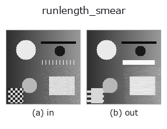

morphology op• 데이터 종류: image → image
• 호출: fullseye.apply(img, "runlength_smear", a=0.5, b=0.5)(2-D 는 이미지 1 장 + 스칼라 노브 2 개 a,b∈[0,1] 모델)

*그림은 128×128 합성 입력에서 실제로 실행한 출력. 왼쪽이 입력, 오른쪽이 출력. 점군은 위에서 본 산점도(밝기 = z), 1-D 열은 꺾은선, 볼륨은 z 방향 최대값 투영, 동영상은 가운데 프레임, 복소 영상은 진폭이며, 그림이 되지 않는 반환값은 값 자체를 표시한다.*
노브 a 를 훑기(0.1 / 0.5 / 0.9, 다른 노브는 기본값):
▸ runlength_smear: knob a sweep (docs site)
노브 b 를 훑기(0.1 / 0.5 / 0.9, 다른 노브는 기본값):
▸ runlength_smear: knob b sweep (docs site)
다른 영상에서도(합성 장면 / 사진 / 동전. 윗줄이 입력, 아랫줄이 그 출력. 노브는 기본값):
▸ runlength_smear: other inputs (docs site)
*4열은 컬러 (H,W,3) 입력. 이 op는 채널을 넘나들지 않고 컬러를 다룰 수 있다(색 채널을 세 번째 공간축으로 컨볼루션하지 않음).*
> 이 연산자의 설명은 아직 번역이 없습니다. 원문을 그대로 싣습니다.
走査長平滑化(RLSA)。行内の字の隙間を埋めて、字を「行」の塊にまとめる。
版面解析(どこが行で、どこが段か)の基本部品。`a` が埋める隙間の長さを
`3,5,9,15,25,41,65 画素(b の向きに沿った線)に振り、b` が向きと
合成を選ぶ: `b <= 0.5 は**水平のみ**、0.5 < b <= 0.75` は垂直のみ、
`b > 0.75` は水平と垂直の小さい方(= 古典 RLSA の 2 パス AND 合成。
両方向で埋まった所だけが残るので、行だけでなく段組みの塊が出る)。
★**既存の `gclose と一部重なる**。gclose は b` で水平線の構造要素を
選べるので、水平 RLSA は原理的に書ける。ここが足すのは 2 つ ——
(1) 隙間が 3〜9 画素でなく 65 画素まで振れる(`_k` の上限では行がつながらない。
文字の間隔は 96 px の字なら 10〜30 画素ある)、(2) 2 方向の AND 合成は
単一の構造要素による閉じでは書けない。片方だけなら `gclose` を使うほうが速い。
濃淡画像にそのまま掛かる(内部で二値化しない)。灰色の閉じ演算なので、
暗い隙間を埋める方向に働く —— 字が明るく背景が暗い画像で使うこと。
逆なら先に `invert を通す。端の扱いは scipy.ndimage の既定の reflect`。
空フレーム(定数画像)はそのまま返る(埋めるべき隙間が無い)。値域は入力のまま
[0,1] に収まり、画像ごとの正規化はしない(値は画像間で比較できる)。
• gallery2d_morphology 패밀리 가이드
• 샘플 데이터 카탈로그(DL URL / 라이선스) —— 2-D 는 skimage.data(BSD/public)+ 합성, 3-D 는 실데이터 소스(Stanford/PDS 등)의 DL URL.
• 연산자의 내력·참고문헌 —— 이 연산자 족의 바탕이 된 연구/기법의 출처.
• 알고리즘의 정전(저자·연도)과 용도는 위의 패밀리 사용 가이드에 적혀 있습니다.
아래 프로그램은 실제로 실행됨을 확인했습니다(그림과 같은 입력). Studio 도움말에서는 이 블록이 버튼이 되어 즉시 불러와 실행할 수 있습니다.
runlength_smear 0.35 0.50
▸ Load this pipeline · Load & run
• gallery2d_morphology — py -3.11 examples/gallery2d_morphology.py
image 를 입력으로 받는 것)identity · gaussian · mean_box · bilateral · unsharp · median · min_filter · max_filter
morphology)gerode · gdilate · gopen · gclose · tophat · bothat · morph_grad · persistence_map
*Provenance: ops.py — 2D 연산자 레지스트리. 이 op 노트는 tools/opdocs.py md 가 자동 생성합니다(직접 편집하지 마세요).*
© 2026 Kazufumi Furuse — Fullseye operator documentation. Licensed under Apache-2.0.
{kind=link}
{kind=link}
{kind=link}